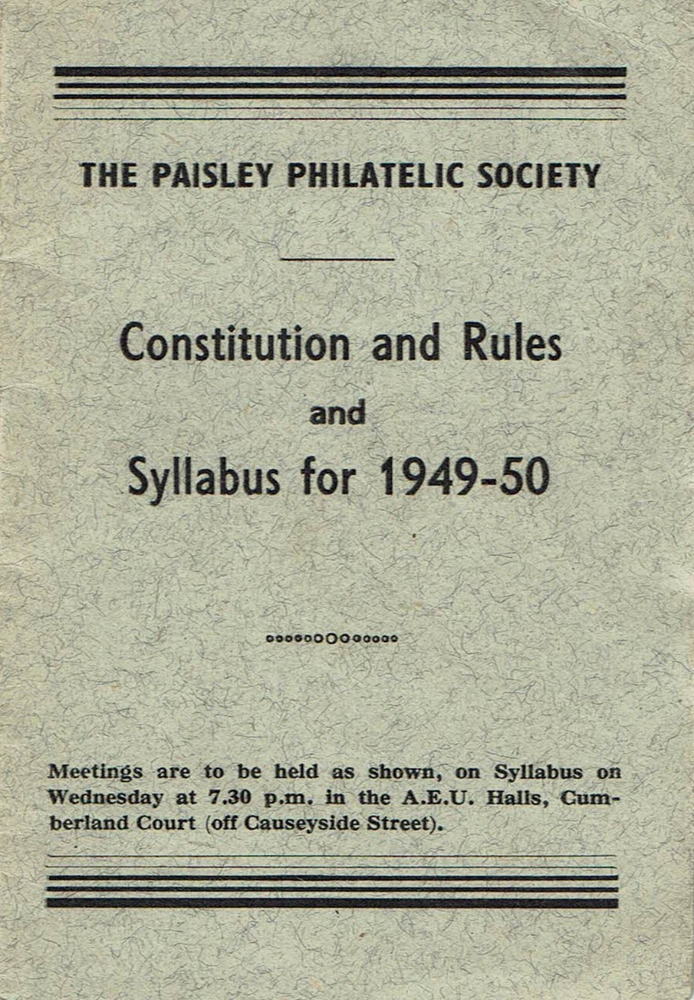
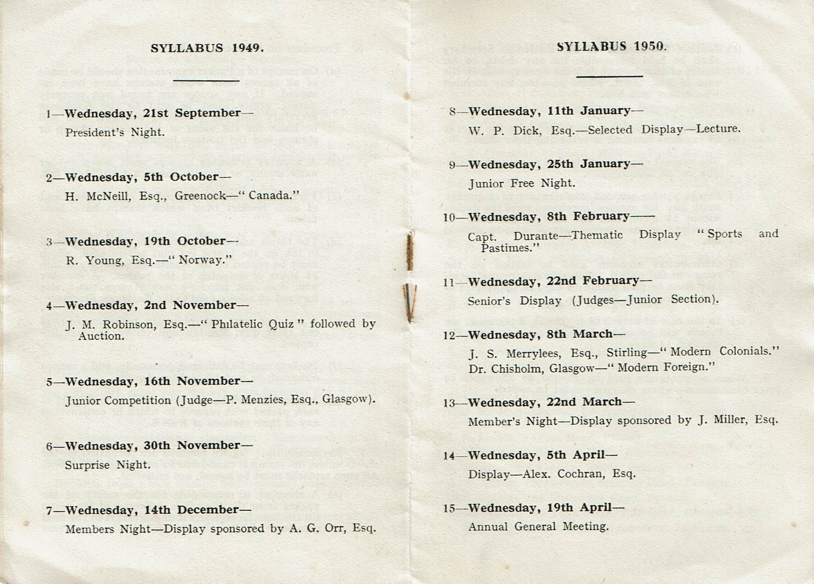

History
Paisley Philatelic Society was formed in 1947, under the Presidency of Mr A. B. Clements and the Vice Presidency of Dr A. C. Richmond.
During the first year of the Society, the meetings were held in the West School. They were then moved to the A.F.U. Halls in Cumberland Court, where they remained until 1952. From 1952 until 1965, the venue for the Society was the YMCA Halls in the High Street. In 1965 the meeting place was again changed, this time to the New Templars Halls. From 1967 the Society has held its meetings in Ralston Community Centre, Allanton Avenue and continues to do so. Meetings are held every second Wednesday, during the "season", and a thriving Society is to be found there.
Membership recorded in the earliest syllabus located in the archives from session 1949/50 was 45, with 21 junior members. This grew to a peak or over ninety in 1979. As with most other Clubs and Societies numbers have declined in more recent years, currently membership has fallen below 20. With the intention of increasing membership meetings are now held on Wednesday afternoons at 2pm. See the meetings page for syllabus.

Meeting on 21st September 1949 was meeting no. 23.
From the founding of the Society, its intention was to promote the growth of philately, and the fellowship which arises from it. Displays were, and are still given by Club Members and invited guests from other Societies. Visits are made to and received from other Societies. New members and junior members are encouraged to produce items from their collections, and much useful and interesting advice and encouragement is always available from the more experienced members.
In 1968, the Macintyre Cup was presented to the Society by the late Miss M Macintyre, in memory of her father, Mr William Macintyre of Cochrans. In 1971, the Donaldson Rose Bowl was given to the Society by the late Mr J. S. Donaldson, and in 1972, the Millar Salver was presented for Annual Competition by Mr J Millar. These trophies, for Philatelic, Postal History and Thematic Junior members could also compete for the Junior trophy. Sadly due to the fall in membership the annual competitions are no longer held.
Over the years members of Paisley Philatelic Society have competed successfully at National and International levels. For many of them the Society's annual competition was the first step towards national or international recognition.
Members of the Society have also recorded for posterity their intense interest and knowledge in philately and matters related to posts and postal history. Prominent amongst these publications must be mentioned Mr D Malcolm's monograph "Scottish Aviation Meeting, Lanark, 1910", which is of great interest to Aerophilatelists and aviation historians, and Rev W.T.F. Castle's book "Cyprus, its Postal History and Postage Stamps", which is a definitive book on Cyprus Postal History. Many articles from members have also been published in philatelic magazines and journals.
Philately and Stamp Collecting can be an enormously diverse hobby and members of the Society have a large range of interests which they are only too happy to display and talk about. To complement stamp collecting many members have interests in postcards, postal and local history and throughout the year a wide variety of subjects will be displayed by members and invited guests. Paisley Philatelic Society is a thriving Society and maintains a friendly and welcoming atmosphere and there will always be time to spare to encourage, advise and praise new members or anyone who has a passing interest in stamps and stamp collecting.